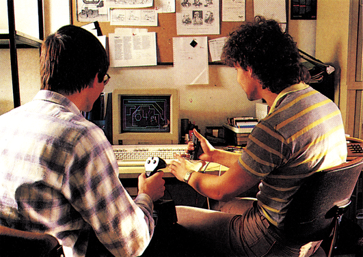
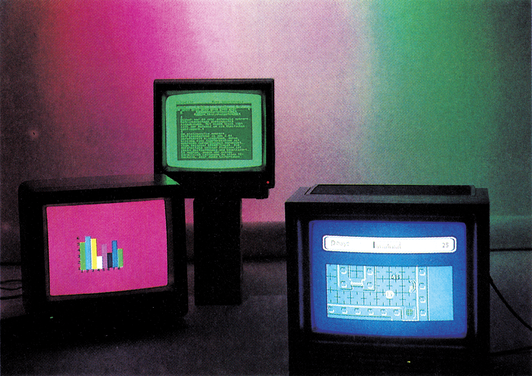
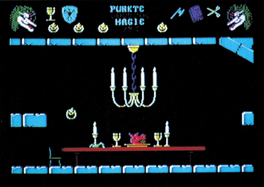

Vorschau
Drucker durchleuchtet
Wußten Sie, daß ein Drucker ein eigener Computer ist, den man auch programmieren kann? Wenn nein, dann sollten Sie unseren Druckerkurs lesen. Natürlich beschränken wir uns nicht nur auf einen Druckertyp, sondern zeigen Ihnen zunächst, wie Sie Programme aus anderen Basic-Dialekten oder von einem Drucker auf einen anderen umschreiben. Der Schwerpunkt liegt dabei auf unseren Referenzdruckern und den Commodore-Druckern MPS 801, 803 und 802. Außerdem dürfen Sie sich auf zwei interessante Druckertests freuen: Wir stellen den 300 Zeichen pro Sekunde schnellen Seikosha MP 1300 AI und den Nachfolger des CP 80X, den CPA 80X von Melchers, vor.
RP-System im Test
Nach monatelanger Ankündigung ist es endlich lieferbar: Das RP-System von Brillant Software. Die Werbung verspricht einfache und schnelle Spiele-Programmierung mit fantastischen Ergebnissen auch für den Laien. Wir prüfen ausführlich, was dahintersteckt.

C 64-Großrechnern ebenbürtig?
Nicht nur die großen Brüder des C 64 sind in der Wissenschaft und Technik aktiv, sondern auch der C 64 selber. Wie und wo er eingesetzt werden kann, stellen wir Ihnen in unserem Schwerpunktthema Forschung und Technik anhand von Beispielen vor. Der C 64 leistet seinen Beitrag zur Erforschung der Natur und zum Ablauf von Produktionsabläufen in der Flugzeugplanung, in der Stadtökologie oder der Maschinensteuerung. Kleine Kurzprogramme geben Ihnen einen Einblick in die Aufgaben- und Einsatzgebiete des C 64.
Monitore
Eine Frage, die all jene bewegt, die sich einen C 64 kaufen: Wie wird das Bild auf dem heimischen Fernseher aussehen? Für den C 64 untersuchen wir, ob handelsübliche Fernseher dem Vergleich mit Monitoren standhalten können. Neue Monitore für den C 128: Immer mehr Konkurrenz zum Commodore 1901 erscheint auf dem Markt. Welche Monitore lassen sich an einen C 128, ohne Elektronikkenntnisse oder Lötarbeiten, anzuschließen?

Vectors
Ein fantastisches Spiel zum Abtippen gibt es in der nächsten Ausgabe für die C 128-Besitzer. »Vectors« können Sie zu zweit oder gegen den Computer spielen. Unter Ausnutzung der maximalen Auflösung von 640 x 200 Punkten macht dieses mit vielen Effekten und Schwierigkeitsstufen ausgestattete Action-Spiel richtig süchtig. Ein rasantes Spiel, das sehr viel Geschicklichkeit und sehr schnelles Reaktionsvermögen erfordert.
Der Kürbis schlägt zurück
Unter diesem Titel erscheint die Fortsetzung des Spiele-Bestsellers »Hexenküche«. Wir konnten das fertige Programm als einer der ersten spielen und testen. Gleichzeitig starten wir mit dem Produzenten von »Der Kürbis schlägt zurück«, Palace Software, einen großen Wettbewerb zum Spiel. Weiterhin winken noch andere interessante Spiele-Tests in der nächsten Ausgabe.

Das Netz der Zukunft
Wegen der zunehmenden Flut an zu übertragenden Daten wird die Leistungsfähigkeit der bisherigen Datennetze wie Telex, Datex und Btx bald an ihren Grenzen angelangt sein. Btx-Teilnehmer werden eine Netzüberlastung in der Mittagszeit schon häufiger zu spüren bekommen haben. Daß die bisherige Netzstruktur nichts für die Zukunft ist, weiß man bei der Post schon seit langer Zeit. Aus diesem Grund beginnt man schon jetzt mit dem noch versuchsweisen Aufbau des digitalen